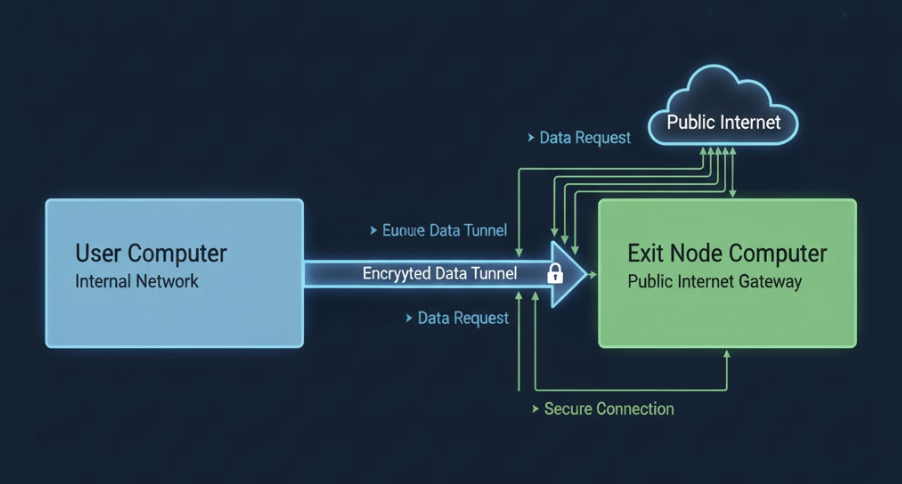

TailScale - Use Exit Node for Specific Websites only
Problem
Tailscale1 provides zero-config mesh VPN built on top of Wiregaurd.
It provides an option to use an exit node for routing all traffic through it. But it can't route only specific domains through the exit node.

Solution
Setup a SOCKS proxy using ssh command line tool.
ssh -D 1080 -f -C -q -N user@exit-node-ip
-D 1080 : Specifies the local port to listen on for SOCKS connections.
-f : Requests ssh to go to background just before command execution.
-C : Enables compression.
-q : Quiet mode.
-N : Do not execute remote commands.
Once it is started, we can use ZeroOmega2 browser extension to route specific domains through the SOCKS proxy.

In the auto switch profile, we can setup specific domains which needs to be directed to the proxy.
For all other domains, it will use the direct connection.
This works only for the browser where the extension is installed.
To apply this at the system level, we can use pac file and update the system proxy settings to use the pac file.
Conclusion
Tailscale provides app connector feature to route specific apps through the exit node, but it is needs publicly reachable IPs & Linux based OS for now.
Setting up SOCKS proxy & using a browser extension or PAC file is much easy & straight forward solution to route specific domains through Tailscale exit node.
Need further help with this? Feel free to send a message.

Anand Reddy Pandikunta (ChillarAnand)
Improving Health & Wealth with Technology